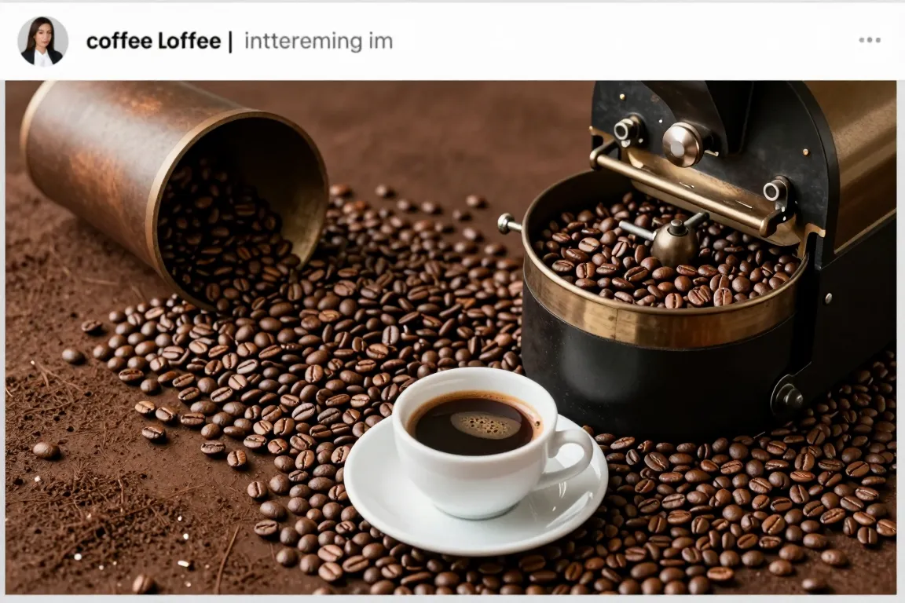

Et beskåret skjermbilde av et kort innlegg i sosiale medier i sitt eget grensesnitt: avatar, navn, tekst og en rad med tellere. Spøken ligger i ordene, og utsnittet og grensesnittet gir den bevis og tone.

Kjerneidé
Bruk det enkle utseendet til et innlegg i sosiale medier som ramme, slik at teksten leses som en ekte stemme.
Designprinsipper
Beskjær skjermbildet til innleggskortet med en bredde på 550px til 600px og 16px polstring på sidene.
Vis en avatar på 48px (sirkel), et fet navn og et grått brukernavn over teksten.
Sett innleggsteksten i en systemsans-serif på 15px til 17px med linjehøyde 1,35.
Hold en rad med 4 tellere (svar, repost, like, del) i grå skrift på 13px under teksten.
Bruk et hvitt kort i lys modus eller et #15202B-kort i dempet modus; ikke bland dem.
Legg til en tynn kant på 1px eller la kanten stå rå; beskjær slik at noen få piksler av neste innlegg er synlige.
Hold skjermbildet svakt komprimert, som originalen; ikke skjerp det.
Antimønstre
Pyntelige skrifter i innleggsteksten
Lagt til dekor rundt kortet
En beskåret avatar uten navn
Perfekt, ukomprimert gjengivelse av et falskt kort